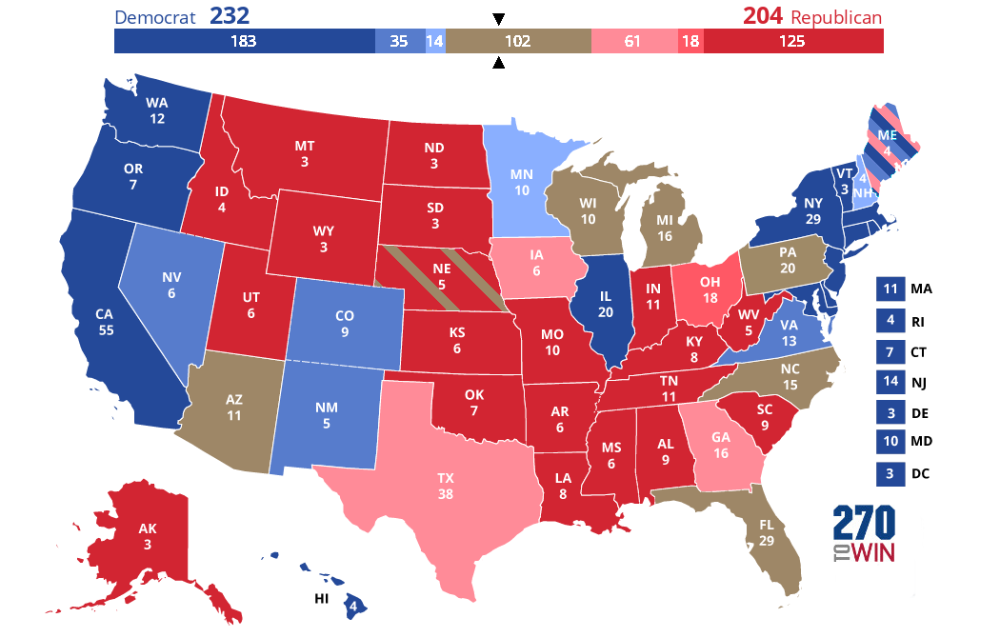

The map to the right portrays the tweets that are in favor and or supportive of the black lives matter movement and were found and collected by using a twitter api to scan through tweets with the key words/statement "Black Lives Matter" and BLM/blm.
ADD ANALYSIS
The map to the right portrays the tweets that are against and or lean to the "All Lives Matter" stand point. While all lives certainly do matter, the current and apparent need to abolish systemic racism of the world and the opression of the black communities and people of color takes priority. This section shows the regional trends of tweets involving "all lives matter" and other oppositional key words. These tweets were also found and collected by using a twitter api to scan through tweets with the key words/statement such as "All Lives Matter".
ADD ANALYSIS
By combinging both point types into a singular map and looking to the image of the partymap just below we can see the clear and obvious trends of the types of the tweets and their locations to the majority party of their respective states.
GO MORE INDEPTH
The best way to help is to stay informed. The following map shows the major cities participating in large scale protests that have set up funds and organizations to provide information for those who wish to learn more and to collect finacial aid to help pay for resources, bail funds, and help pay for funeral expensises and provide for the families who've lost loved ones to police bruitality and other hate crimes.
GO MORE INDEPTH